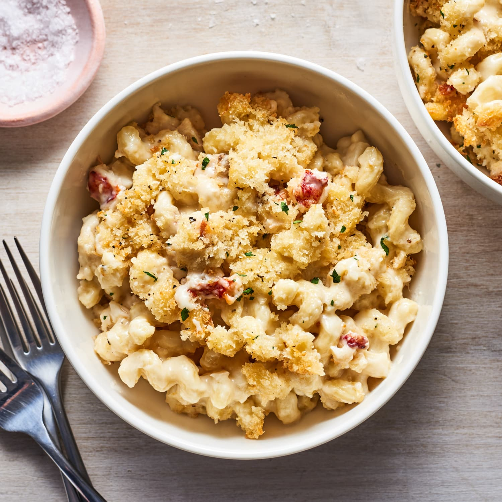

Lobster Mac and Cheese

Description
This creamy lobster mac and cheese is just my style: high-class meets down-home. The fantastic combination of
flavors makes this one of my favorites..
Ingredients
- Macaroni
- Lobster
- Butter
- Vegetables
- Milk
- Seasonings
- Flour
- Cheeses
- Bread crumbs
Steps
- Cook the macaroni in salted water.
- Cook the lobster in the pasta water. Cut the meat into pieces and reserve the shells.
- Cook the onions in butter, then set aside.
- Add the shells, milk, shallot, peppercorns, and garlic to the pan and bring to a simmer.
- Make a roux, then whisk into the (strained) milk mixture. Cook until thick.
- Stir in the cheeses and season. Stir in the meat, onions, and noodles.
- Pour the mixture into a prepared casserole dish and top with Panko crumbs.
- Bake until the sauce is bubbly and the top is brown
Home